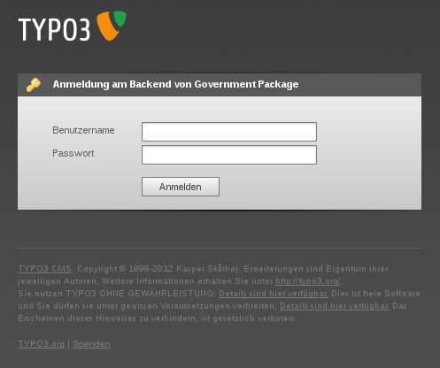
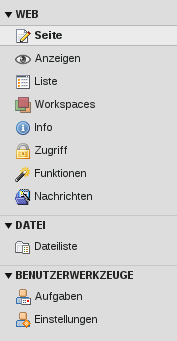
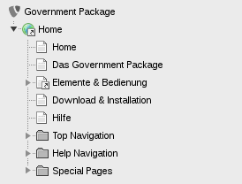
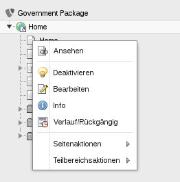
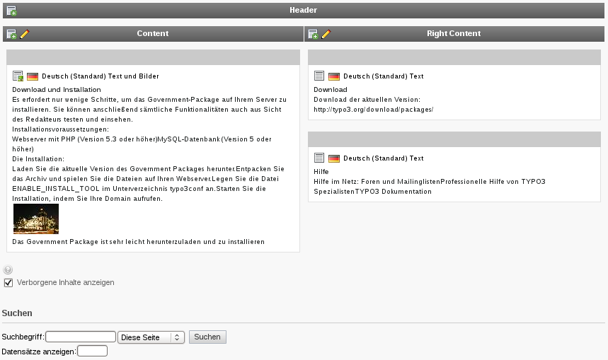
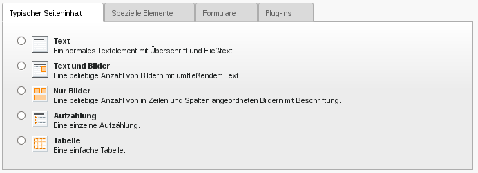
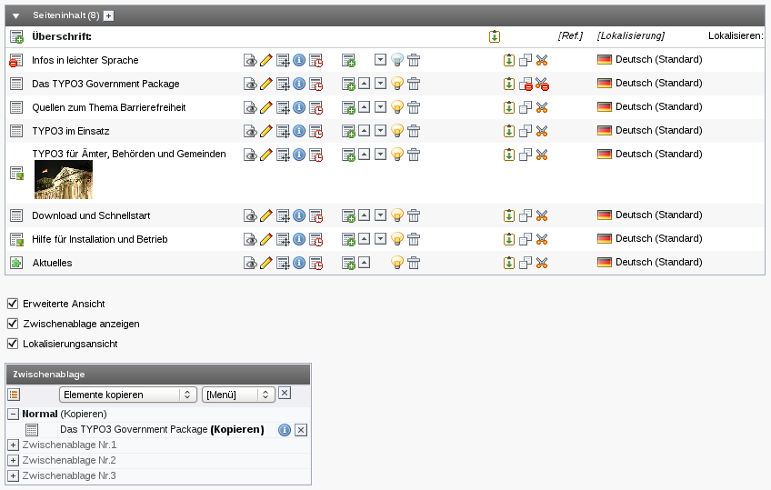
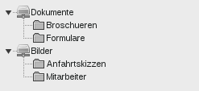
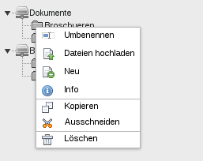

Marco Ziesing
21. Mai 2012


 

Wenn das Seitenmodul "TemplaVoila!" (grünes TV) verwendet wird,
können auch Inhaltselemente per Drag 'n' Drop verschoben werden.

Neue Inhalte sollten immer über das Seiten-Modul hinzugefügt werden, da sie sonst keiner "Spalte" zugeordnet und somit nicht angezeigt werden.

 